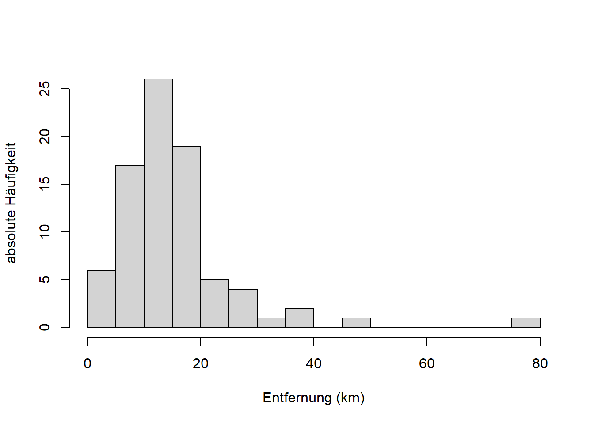
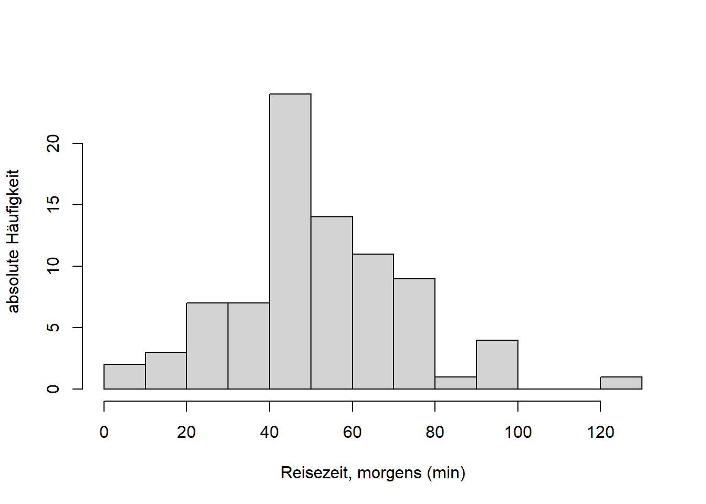

Chapter 4 Streuungsparameter, Schiefe und Wölbung
4.1 Streuungsparameter
Lesen Sie dazu bitte Kapitel 3.2.3 von Zimmermann-Janschitz (2014).
Streuungsparameter sind Maße der Variabilität einer Häufigkeitsverteilung. Uns interessieren hier v.a. Spannweite, Quartilsabstand, Varianz und Standardabweichung und Variationskoeffizient, weniger durchschnittliche absolute Abweichung, da wir leztere kaum in der Praxis sehen.
Spannweite und Quartilsabstand lassen sich am besten mit einem sogenannten Box-Whisker-Plot, kurz einfach Boxplot, verdeutlichen (Abbildung 4.1). Ein Boxplot fasst die Verteilung der Werte eines Merkmals (in einer Stichprobe) zusammen. Die Spannweite ist der Abstand zwischen Minimum und Maximum der Merkmalswerte. Der Quartilsabstand ist der Abstand zwischen 0,25-Quantil und 0,75-Quantil; in diesem Bereich liegen 50% der Merkmalswerte (0,75-0,25). 0,25-Quantil, 0,5-Quantil (Median) und 0,75-Quantil heissen auch 1., 2. und 3. Quartil, weil sie den Wertebereich in vier gleichgrosse Teile teilen: Zwischen Minimum und 0,25-Quantil liegen 25% der Merkmalswerte, zwischen 0,25-Quantil und Median 25%, zwischen Median und 0,75-Quantil 25% und zwischen 0,75-Quantil und Maximum ebenfalls 25%. Ebenso gibt es auch Quintile usw., diese sind aber in der Praxis kaum von Bedeutung. Ein Boxplot kann horizontal wie hier und vertikal dargestellt werden.

Figure 4.1: Boxplot mit Quartilsabstand und Spannweite.
Der Boxplot ist eine vereinfachte Darstellung eines Histogramms. Schauen Sie sich dazu bitte Kapitel 4.3.6 von Zimmermann-Janschitz (2014) an, besonders Abbildung 4.10. Sehen Sie welcher Boxplot in 4.10b zu welchem Histogramm in 4.10c gehoert?
Die Entsprechung koennen Sie auch in unseren Reisedaten sehen (hier sowohl “Entfernung” als auch “Reisezeit”):
# Histogramm "Entfernung" in km
hist(dat$x/1000, breaks = seq(0, 55, 5),
main = "", xlab = "Entfernung (km)",
ylab = "absolute Haeufigkeit")
# Histogramm "Reisezeit" in min
hist(dat$t, breaks = seq(0, 120, 10),
main = "", xlab = "Reisezeit (min)",
ylab = "absolute Haeufigkeit")
# Boxplot "Entfernung" in km
boxplot(dat$x/1000, range = 0, horizontal = TRUE,
ylim = c(0,55), xlab = "Entfernung (km)")
# Boxplot "Reisezeit" in min
boxplot(dat$t, range = 0, horizontal = TRUE,
ylim = c(0,120), xlab = "Reisezeit (min)") “Entfernung” ist schief verteilt, die zentralen 50% der Verteilung - die “Box” im Boxplot - befinden sich links der Mitte. “Reisezeit” dagegen ist annaehernd symmetrisch verteilt, mit der Box in Mitte des Plots. Es ist wichtig fuer das Verstaendnis von Verteilungen in Kapitel 7, dass sie den Zusammenhang zwischen Histogramm und Boxplot verstehen!
Nun zu den weiteren Streuungsparametern. Die Varianz \(s^2\) ist die mittlere (“durchschnittliche”) quadrierte Abweichung der Merkmalswerte \(x_i\quad\left(i=1, 2, \ldots, x_n\right)\) vom arithmetischen Mittel \(\bar x\): \[s^2=\frac{\sum_{i-1}^{n}\left(x_i-\bar x\right)^2}{n-1}\]
Genau genommen ist das die korrigierte Varianz, wo durch \(n-1\) geteilt wird und nicht durch \(n\) wie man bei einer Mittelung erwarten wuerde. Das Teilen durch \(n-1\) garantiert eine optimale Schätzung der Varianz der Grundgesamtheit anhand der Stichprobe - mehr dazu in der schliessenden Statistik. Der Nenner \(n-1\) wird Anzahl Freiheitsgrade genannt und bezeichnet die Anzahl der Werte in einer Stichprobe, die für die Berechnung des Parameters (hier Varianz) frei zur Verfügung stehen. Im Fall der Varianz ist ein Wert der Stichprobe bereits “belegt” – durch das arithmetische Mittel. Daher reduziert sich die Zahl der Elemente der Stichprobe, die in die Berechnung eingehen um eins.
Die Standardabweichung \(s\) ist die Quadratwurzel der mittleren quadrierten Abweichung der Merkmalswerte \(x_i\quad\left(i=1, 2, \ldots, x_n\right)\) vom arithmetischen Mittel \(\bar x\), d.h. die Quadratwurzel der Varianz: \[s=\sqrt{s^2}=\sqrt{\frac{\sum_{i-1}^{n}\left(x_i-\bar x\right)^2}{n-1}}\]
Die Standardabweichung besitzt die gleiche Einheit wie die Merkmalswerte und ist deshalb einfacher zu interpretieren als die Varianz. Sie drückt die Streuung der Merkmalswerte um den Mittelwert bzw. deren Abweichung vom Mittelwert in einer anschaulichen Größe aus. Je größer die Werte der Standardabweichung sind, desto mehr streuen die Daten.
Der Variationskoeffizient \(v\) einer Häufigkeitsverteilung mit den Merkmalswerten \(x_i\quad\left(i=1, 2, \ldots, x_n\right)\) schliesslich ist die Standardabweichung \(s\) im Verhältnis zum Mittelwert \(\bar x\): \[v=\frac{s}{\bar x}\]
Der Variationskoeffizient setzt die Streuung der Merkmalswerte in unmittelbare Relation zum arithmetischen Mittel. Dadurch werden unterschiedliche Verteilungen vergleichbar.
Schauen wir uns die Streungsparameter fuer die Reisedaten mittels R an:
## [1] 13.95896## [1] 68.74909## [1] 8.291507## [1] 8.291507## [1] 0.5939919## [1] 50.80612## [1] 365.0445## [1] 19.10614## [1] 0.3760598Obwohl “Reisezeit” im Vergleich zu “Entfernung” eine viel groessere Varianz hat ist der Variationskoeffizient kleiner, da Reisezeit auf einer groesseren Skala gemessen wird.
4.2 Schiefe und Wölbung von Häufigkeitsverteilungen
Lesen Sie dazu bitte Kapitel 3.2.5 von Zimmermann-Janschitz (2014).
Die Schiefe \(a_3\) einer Häufigkeitsverteilung von Merkmalswerten \(x_1, x_2, \ldots, x_n\) mit dem arithmetischen Mittel \(\bar x\) und der Standardabweichung \(s\) bezeichnet die Abweichung der Verteilung der Merkmalswerte von der symmetrischen Form: \[a_3=\frac{\sum_{i=1}^{n}\left(x_i-\bar x\right)^3}{n\cdot s^3}\]
Fuer eine symmetrische Verteilung gilt: \[a_3=0\quad \bar x_{mod}=\bar x_{med}=\bar x\] D.h. Modus, Median und Arithmetisches Mittel sind identisch.
Fuer eine sogenannte rechtsschiefe (linkssteile) Verteilung gilt: \[a_3>0\quad \bar x_{mod}<\bar x_{med}<\bar x\] Fuer eine linkschiefe (rechtssteile) Verteilung gilt: \[a_3<0\quad \bar x_{mod}>\bar x_{med}>\bar x\]
Wie wir an Histogramm und Boxplot der Entfernungsdaten bereits gesehen haben ist die Verteilung des Merkmals “Entfernung” rechtsschief:
## [1] 1.430997## [1] 13.065## [1] 13.95896Die Verteilung des Merkmals “Reisezeit” dagegen ist weniger rechtsschief, annaehernd symmetrisch, was man auch daran sieht, dass der Median und das aritmetische Mittel fast identisch sind:
## [1] 0.4462817## [1] 50## [1] 50.80612Die W√∂lbung \(a_4\) einer H√§ufigkeitsverteilung von Merkmalswerten ùë•\(x_1, x_2, \ldots, x_n\) mit dem arithmetischen Mittel \(\bar x\) und der Standardabweichung \(s\) bestimmt die Steilheit einer Verteilung: \[a_4=\frac{\sum_{i=1}^{n}\left(x_i-\bar x\right)^4}{n\cdot s^4}-3\]
Die Subtraktion von “-3” dient der Standardisierung auf die sogenannte Normalverteilung, eine symmetrische, glockenfoermige Verteilung (s. Zimmermann-Janschitz (2014), Kapitel 3.2.5). Mehr zur Nofmalverteilung in Kapitel 7.
Fuer eine Normalverteilung gilt: \[a_4=0\]
Fuer eine spitzere Verteilung als die Normalverteilung gilt: \[a_4>0\]
Fuer eine flachere Verteilung als die Normalverteilung gilt: \[a_4<0\]
Die Verteilungen der Merkmale unserer Reisedaten sind beide spitzer als die Normalverteilung, wobei “Entfernung” wegen der Rechtsschiefe garnicht mit der Normalverteilung vergleichbar ist:
## [1] 3.86359## [1] 0.9528005Literatur
Zimmermann-Janschitz, S. 2014. Statistik in Der Geographie. Book. Berlin: Springer Spektrum.